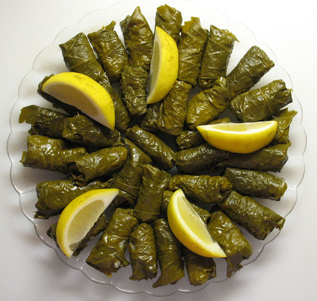

Grape Leaves

Warak enab, dolma or simply stuffed grape leaves recipe is so popular in the Mediterranean. Tangy, tender grape leaves wrapped around aromatic rice and cooked to perfection. This old-fashioned recipe is an all-time family and friends favorite. Follow my tips for a foolproof, delicious vegetarian stuffed grape leaves each time.
Ingredients
- 1 jar of grape leaves
- 11 cup of short-grain rice
- 1/2 pound ground beef or lamb (optional)
- 2 medium tomatoes, finely chopped
- 1 large onion, finely chopped
- 1/4 cup fresh parsley, finely chopped
- 1/4 cup fresh dill, finely chopped
- 1/4 cup fresh mint leaves, finely chopped
- 1/4 cup lemon juice
- 2 tablespoons olive oil
- Salt and pepper to taste
- 1 teaspoon ground cumin
- 1/2 teaspoon allspice
- 1/2 cup of chicken or vegetable broth
Instructions
Preperation
- Rinse the grape leaves in cold water and drain.
- Soak the rice in warm water for 10-15 minutes, then drain.
Filling
- In a bowl, mix the drained rice, chopped tomatoes, onion, parsley, dill, and mint. Add the ground beef/lamb if using.
- Season with salt, pepper, cumin, and allspice. Drizzle with olive oil and half of the lemon juice. Mix well.
Assembling
- Lay a grape leaf flat on a work surface, vein side up and stem towards you. Cut off the stem.
- Place a small amount of filling near the stem end. Fold the sides of the leaf over the filling, then roll tightly away from you.
- Repeat with the remaining leaves and filling.
Cooking
- Arrange stuffed leaves snugly in a large pot, seam-side down. Pour the remaining lemon juice and broth over the leaves.
- Place a plate upside down over the leaves to keep them submerged. Cover the pot with a lid.
- Cook over low heat for about 45-60 minutes or until the leaves are tender and the filling is cooked.